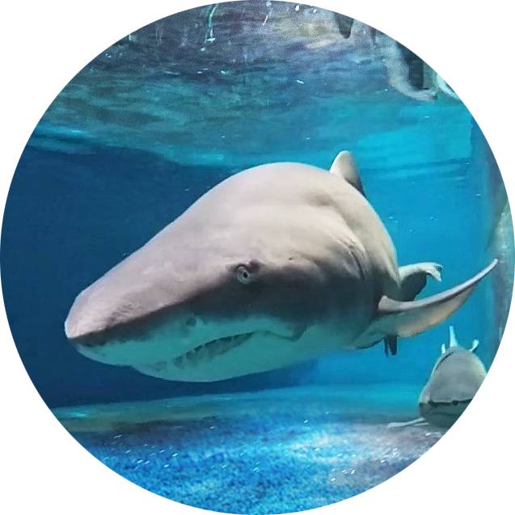
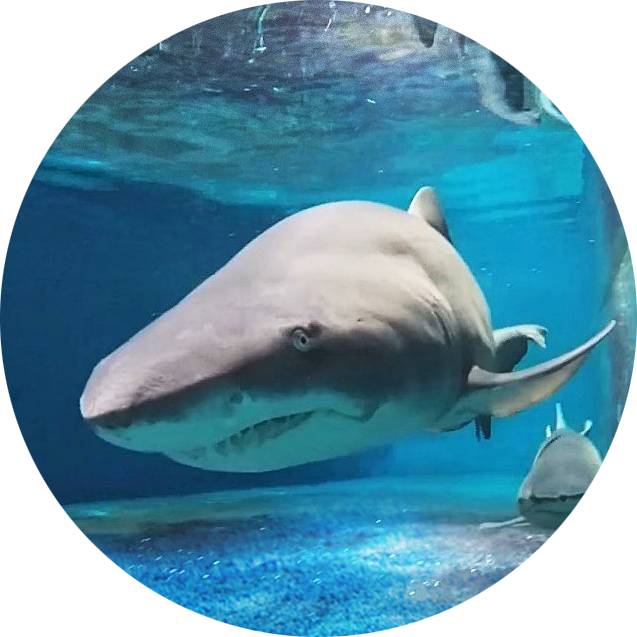

아쿠아플라넷 TOP7 친구들을 소개합니다!
물 범
Phocidae 포유류
전 세계적으로 2-5만 마리가 살고 있으며
털은 흰바탕에 작은 무늬가 많으며 배는 짙은 색깔을 띤다.
몸길이는 150-200cm이고, 몸무게는 120-150kg이다.
수명은 9~12년이며, 돌출된 귀가 없는 것이 특징이다.
육상에서는 걷지 못하고 배를 땅에 대고 기어다닌다.
네 개의 발은 털로 덮여 있고 발톱이 잘 발달되어 있다.
헤엄을 칠 때는 좌우의 발바닥을 서로 합쳐서
마치 물고기의 꼬리지느러미와 같은 운동을 하여 움직인다.
바다뱀 종류를 주식으로 먹으며, 불가사리, 고둥 등
해양 연체동물도 잘 먹는다.
흰동가리
Amphiprion clarkii 해수경골어류
2003년 픽사에서 만든 애니메이션 (니모를 찾아서)에 등장했다.
몸길이는 15cm 정도로 산호초나 암초의 말미잘 주위에서 생활하며,
위협을 받을 때나 밤에는 말미잘의 촉수 사이에 숨는다.
말미잘과 공생하는데 피부에서 나오는 끈적끈적한 점액으로
말미잘 촉수에서 나오는 독으로부터 몸을 보호한다.
보통 말미잘 한 마리에는 큰 암컷 한 마리,
그보다 작은 수컷 한 마리,
그리고 어린 흰동가리 1~3마리가 집단을 이루어 생활한다.
산란기는 5-11월이며, 말미잘이 있는 암초 위에 알을 낳는다.
제주도·일본·필리핀·인도양·아프리카 동쪽 연안·홍해 등지에 분포한다.

풀잎해룡
Phyllopteryx taeniolatus 해수경골어류
풀잎해룡속(Phyllopteryx)의 유일한 종이다.
서식지가 매우 제한적이어서 대보초와 태즈메이니아 등
호주 연안 일부에서만 발견된다.
몸길이는 45cm 내외이며, 몸의 구조는 해마와 유사하지만
꼬리를 감지 않고 펼친 채 유영한다
생김새는 바닷말과 비슷하며 몸의 지느러미는 엽상체와 닮았으며,
지느러미 외에도 방어용의 뾰족한 가시들이 몸 곳곳에 나 있다.
수컷이 암컷보다 좀더 좁고 어두운 색의 몸을 지녔다고 알려져 있다.
크릴, 곤쟁이와 플랑크톤 등을 주식으로 하며,
50m 안팎의 얕은 연안 구간, 특히 해저가 완만한 곳에서 서식한다.
번식에 관해서는 거의 알려진 바가 없다.
키다리게
Macrocheira kaempferi 절지동물
현존하는 절지동물 중 가장 큰 크기를 자랑한다.
다리 길이를 포함하여 3.8 m까지 자라며
갑각 너비는 40 cm까지 성장한다.
수컷이 암컷에 비해 더 긴 집게다리를 가지고 있으며,
암컷의 집게다리는 걷는다리보다 상당히 짧다.
수명은 100년 가까이다.
다른 갑각류들이 그렇듯이, 탈피 직후에는 몸이 부드러워 다른 동물의
공격을 받기도 한다.
식성은 잡식성으로, 죽은 동물이나 해초, 조류를 먹기도 하고
껍질이 있는 연체류를 열어 잡아먹기도 한다.
야행성이며, 움직임이 느리고 포식자의 공격에 취약하다.
수심 50~500 m에 서식한다. 남획으로 개체수가 위협 받고 있다.
빅벨리해마
Hippocampus abdominalis 해수경골어류
멸종위기종으로 지정된 실고기과의 해마이다.
호주에 서식하는 종으로 해마중 가장 큰 종이다.
배가 유난히 크고 볼록하여 빅벨리해마라고 불린다.
해마는 일생을 일부일처제로 살며 수컷이 새끼를 낳는
특이한 방식으로 번식한다.
식생도 가늘고 긴 주둥이를 이용하여 물을 빨아들인 다음
그 속에 들어 있는 동물성 플랑크톤이나 작은 새우 등을 먹는 정도이다.
해마의 주둥이는 눈 뒤쪽의 머리 길이와 같고 머리가
다른 어류에 비해 거의 직각으로 구부러져 있다.
깊은 바다로 내려가지 못하고 몸을 의지할 만한 산호나
해조류 등이 사는 얕은 수심의 연안에 모여 산다.
철갑상어
Acipenser sp 민물어류
지구상에 가장 오랫동안 존재해 온 고대어 중 하나이다.
철갑상어목 철갑상어과에 속하는 어류의 일종으로
민물고기인 동시에 바닷물고기이기도 하다.
비늘 없는 유선형 몸체를 가지고 있으며 몸길이가 2~5m 정도까지
달하는 대형 어종이다.
입에는 이가 없어 강바닥에 서식하는 무척추동물들과 미생물들을
주식으로 한다.
중국의 양쯔강·한반도의 두만강·남한강·금강·러시아·사할린
일본 홋카이도 등지에 널리 서식한다.
강의 하류나 얕은 해안에 살다가 산란기에 강을 거슬러오는
화유성 어류다.
 

샌드타이거샤크
Carcharias taurus 해수경골어류
샌드 타이거 샤크는 덩치가 크고 날카로운 이빨을 밖으로 드러내고
있지만 온순하며 사람에게 위험하지 않다.
샌드 타이거 샤크는 쇄파 지역까지 나오고 때에 따라 사람이 가까이
오기도 한다.
길고 매끈한 이빨을 이용해 먹이를 통째로 집어삼켜버린다.
이빨이 입 안쪽을 향해 휘어져 있어서 한번 물은 먹잇감은
절대로 놓치지 않는다.
새끼들은 태어나기전, 어미의 배 속에서 서로 잡아먹기 때문에
가장 강한 한 마리만 살아남는다.